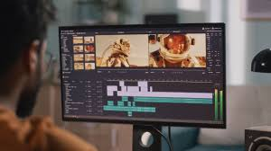

La animación digital da vida a imágenes estáticas mediante tecnología computarizada. La animación digital o animación computarizada es una técnica que consiste en dar vida a figuras, personajes y objetos inanimados. Ya se trate de imágenes, dibujos, fotografías o modelos creados por ordenador, la animación digital tiene como objetivo recrear un escenario en el que las secuencias de movimientos y sensaciones parezcan lo más reales posible. Por otra parte, la animación multimedia es una forma de dar movimiento a elementos visuales dentro de un contexto multimedia, como videos, gráficos o imágenes. Se trata de la creación de secuencias de imágenes ligeramente diferentes que, al ser proyectadas rápidamente, dan la ilusión de movimiento. Esta técnica se utiliza en diversos campos como el entretenimiento, la publicidad, la educación y más.
La animación tiene raíces en el siglo XIX con dispositivos como el zoótropo y el praxinoscopio. En el siglo XX, la animación tradicional dominó la industria con estudios como Disney. Hoy en día, la animación digital y el CGI han revolucionado la forma en que se crean películas y videojuegos. La animación es el proceso de crear la ilusión de movimiento mediante la manipulación de imágenes estáticas. Se utiliza en diversas industrias, desde el entretenimiento hasta la publicidad y la educación. La animación se basa en principios fundamentales como la persistencia de la visión, que permite que el ojo humano perciba una serie de imágenes estáticas como un movimiento fluido. A lo largo de la historia, ha evolucionado desde técnicas tradicionales hasta métodos digitales avanzados.
Utiliza programas como Adobe After Effects, Maya, o Blender, que ofrecen una amplia gama de herramientas y posibilidades.
Permite una producción más rápida y cambios más ágiles, ya que los elementos pueden ser ajustados y reutilizados.
Ofrece opciones como la animación 3D, efectos visuales complejos y la integración con otras técnicas multimedia.
Ofrece opciones como la animación 3D, efectos visuales complejos y la integración con otras técnicas multimedia.
Facilita la colaboración remota y el acceso a recursos y tutoriales en línea.
Dibujos hechos a mano.
Creación en 2D o 3D.
Objetos físicos animados.
Innovaciones artísticas.